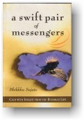

| BuddhaSasana Home Page | English Section |
|  |
A Swift Pair of Messengers Bhikkhu Sujato |
--ooOoo-- Namo Tassa Bhagavato Arahato Samma Sambuddhassa INTRODUCTION
‘Wide open are the doors to the deathless! With this inspirational proclamation the Buddha declared the freedom he had realized available to all. Nothing less than escape from death itself was his promise, and this goal was available to anyone willing to listen to his message with a sincere and confident heart. Although many teachers had appeared ‑ as they still do today ‑ with such extravagant claims, the distinctive feature of the Buddha's teaching was a pragmatic course of spiritual training leading step by step to the goal. This essay is an attempt to clarify the meaning and function of samatha and vipassana in Buddhist meditation. Much has been written on this topic, yet a cloud of confusion persists. I am painfully aware of my presumption in treading where so many more worthy have gone before; however, it seems perhaps worthwhile to gather together many of the Buddha's own statements on the subject in a form neither obscurely technical nor patronizingly simplistic, and to present that material within a consistent and reasonable framework of interpretation. This essay is intended neither as a beginner's introduction nor as a guide to the nuts and bolts of practice. Rather, it is intended for those who have some knowledge and experience in Buddhist meditation, but who are confused by the diverse and often conflicting opinions expressed by meditation teachers. All of those teachers, however, are unanimous on one point ‑ the greatest Teacher, the Teacher of teachers, is the Buddha himself. To seek within the Buddha's own sayings for a guide to the perfect conduct of life is therefore an approach that is not to be faulted by any teacher of Dhamma. But it is to be hoped that this somewhat peculiar beast ‑ an essay on the theory of practice ‑ can provide not only theoretical clarity, but inspiration and practical tools for meditation as well. I wish to emphasize that the sutta passages are the heart of this essay. Despite, perhaps, appearances, I include the vast array of references ‑ like a massed body of soldiers or of evidence ‑ neither to obscure nor to intimidate, but to accord with my conception of good scholarly procedure and, more fundamentally, seeking to inspire a love, a reverence, for this most extraordinary literature. I obviously have my own views on this matter, and offer explanatory material accordingly, but this should be accepted only to the extent that it aids understanding of the suttas. Never should we forget the vast chasm that lies between the label, the word, and the experience to which it points. How can ‘Swan River’ capture the dark grace of a bird on wing? Or the brackish redolence of a lazy warm memory? Still worse, how can it refrain from dragging in a welter of others, of unseen rivers and unnoticed allusions? And if something so banal is so fraught, what then the hope for concurrence in matters such as these, anciently subtle and yet intensely, immediately personal? My chief comfort is that the Buddha himself, having briefly flirted with such thoughts, decided, and then demonstrated, that words could be good enough. This is the distinction between caution and cynicism, not to be forgotten by we who seek to rediscover his meaning. Fear kills spirit. It is the dedicated thirst for understanding, not the complacent acquiescence in a hallowed body of theory, which gives rise to true wisdom. All too often Buddhists come out trumpeting their commitment to free inquiry over tradition, then content themselves with critiquing any tradition but their own. So this work is offered, not as a set of dogmas, but as a stimulus to creative engagement with the teachings. I hardly address the question of how best to apply these teachings in a modem context. While individuals will come to different solutions, I believe that a sincere response will not be easy or comforting; it will not prop up our complacent existence, but will sweep out our stays, precipitating a radical realignment of lifestyle. The most fundamental division of the path is threefold: virtue, samadhi, and understanding. Virtuous ethical conduct dams the poisonous outflow of defilements which pollute behavior of body and speech, corrupting an individual’s relations with the world outside. It conduces to peace and harmony in relationships, in society, and in nature, for a moral person acts in a responsible, co-operative, and non‑afflictive manner. Samadhi clarifies the still waters, cleansing the residual effluents that pollute the mind, cloud the emotions and darken wisdom. It leads to peace and harmony in the world within, with each mental factor functioning appropriately, in balance and unity. And in these still clear waters, understanding is able to locate and dry up the source of pollution once and for all. ‘Samadhi imbued with virtue is of great fruit and benefit. Understanding imbued with samadhi is of great fruit and benefit. The mind imbued with understanding is completely released from all poisons; that is, the poisons of sensual pleasures, existence, views, and ignorance.’ [2] Meditation is the key; in fact the exalted mind states of samadhi as a basis for insight are the very doors to the deathless. ‘What, Bhante Ananda, is one principle declared by the Blessed One who knows and sees, arahant, and fully enlightened Buddha whereby for a monk abiding diligent, ardent, and resolute the unreleased mind becomes released, the un-evaporated poisons become evaporated, and the unattained supreme security from bondage becomes attained?’ ‘Here, householder, a monk, quite secluded from sensual pleasures, secluded from unbeneficial qualities, enters and abides in the first jhana ... second jhana ... third jhana... fourth jhana ... the heart’s release through loving-kindness ... the heart’s release through compassion ... the heart’s release through admiration ... the heat’s release through equanimity ... the base of infinite space ... the base of infinite consciousness ... the base of nothingness ... [In all of these cases] he reflects thus: “This attainment of the base of nothingness is formed by volition and acts of will.” He understands: “Whatever is formed by volition and acts of will is impermanent, subject to cessation”. Standing on that, he attains the evaporation of the poisons [or to the state of non-returning]. This, householder, is one principle declared by the Blessed One... whereby the unattained supreme security from bondage becomes attained.’ When this was said, the householder Dasama of the city of Atthaka said to Venerable Ananda: ‘Just as if, Bhante Ananda, a man seeking one entrance to a hidden treasure were to come all at once upon eleven entrances to a hidden treasure; so too when seeking one door to the deathless I have all at once come to hear of eleven doors to the deathless. Just as if, Bhante, a man had a house with eleven doors, and if that house were to burn down he would be able to save himself through one or other of those doors; so too I will be able to save myself through one or other of the eleven doors to the deathless.’ [3] Samatha, or peace of mind, is a gentle and unobtrusive quality. Meek and shy, she sometimes seems unable to hold her own against the forthright boldness of her brother, vipassana. And yet she has a unique contribution to offer, no less precious for being unobvious. Persistent attempts have been made to diminish the significance of samatha's role in Buddhist meditation in the never-ending search for a shortcut to happiness, so typical of our restless times. It is, however, precisely because our post-modern world stresses the utility of analytical intelligence so excessively that the complementary holistic qualities of serenity and joy are sorely needed. Perhaps this essay may make some small contribution towards rehabilitating samatha to her rightful position as equal partner in that noblest of tasks, the development of the mind. My original plan was simply to investigate the role of samatha in the Buddha's scheme of meditation. As I progressed, however, it became more and more apparent that samatha can be fully understood only in relation to vipassana, and so I found myself being drawn into the deeper waters of the Buddha's wisdom teachings. To some, vipassana is an analysis of objective psychological reality, or a valuable therapeutic tool for mental health, or simply the art of mindful living. To others it is the unique Buddhist contribution to meditative science, while still others regard it as a universal technique independent of commitment to any particular dogma or belief. In my view none of these descriptions do justice to the profundity of the Buddha's vision. Time and again the texts indicate that key aspects of vipassana, especially impermanence, must be understood in terms of dependent origination ‑ how the identification and involvement with experience projects consciousness into future rebirth. Dependent origination is the thread which ties this work together. Following is an attempt at a brief explanatory synopsis of the standard series of twelve factors. [4] Blundering about in the darkness of ignorance, the unenlightened being fails to recognize how their own craving gives rise to suffering. Delighting in conceptual activities and shunning peace, they form kamma ‑ now good, now bad ‑ through body, speech, and mind. This creates a force which propels consciousness ‑ ever hungry for more experience ‑ onward after death into a new body. Like the thumb that grips in opposition to the four fingers, consciousness establishes its identity in a new existence supported by a complex of mentality & physical form. As this sentient organism matures, the six senses develop, through which contact between consciousness and its objects stimulates feelings of pleasure, pain, or indifference. Craving grows; for more pleasure in this life or the next, or else bored, cynical, and despairing, one looks forward to one's own annihilation. Grasping at sensual pleasure and nurturing ideas revolving around a ‘self’ as the essence of being, one’s thoughts and intentions conceive the embryo of continued existence in a future life. But that seed, sprouting in the springtime of birth, must fade in the autumn of aging, and fall in the winter of death. This betrayal of life’s promise is the essence of suffering. Dependent origination combines two complementary approaches to understanding. Through analysis the various aspects or facets of the world are explored, while through synthesis the relations between these facets are examined. Accordingly, in this work the path is first examined with a comprehensive survey of core doctrinal categories, emphasizing the role of samatha, and including a specially detailed exposition of satipatthana, treated as an integral component of the path. The spotlight then turns to conditionality itself, attempting to pin down the precise nature of the causal connection between key factors as a manifestation of a meaningful response to suffering. The seven purifications are elucidated with passages from the suttas. The all-important question, of course, is how to actually walk the path. This is therefore described next, showing the training for both monastics and laity. Given the central importance of samadhi in all the above teachings, the question naturally arises as to why it is so useful ‑ how does samadhi work, and what do we get out of it? The highest benefit of samadhi is its support in attaining the various stages of enlightenment, and so the exploration of the path concludes by presenting the noble ones as living embodiments of the path. Lastly I consider the most important of the sutta passages which have been invoked to cast doubt on the necessity of jhana. Issues relating to the translations have as far as possible been reserved for an appendix so as to not burden the text. A brief selection of comments by some of the most respected contemporary scholars and meditation masters is included. For those who helped give birth to my conception, thank you. For the many faults which doubtless remain, I alone am solely responsible. -ooOoo- Abbreviations
References to the suttas are to sutta and section of LDB and MLDB; samyutta and sutta of CDB (which varies from the reckoning in earlier texts and translations, especially in S35), or verse number for the Sagathavagga; to nipata and sutta for the Anguttara Nikaya and the Itivuttaka; vagga and sutta for the Udana; and verse number for the Dhammapada, Sutta Nipata, and Theragatha.
[1] M26.21. Taking tesam as supplying the implied ‘their’ of the second line (cp. D18.27) and pamuncantu as a poetic variant of abhimuncantu (cp. Sn1146, 1149, A1.14) [2] D16.1.12 [3] M52 [4] Key sutta texts include D14, D15, M9, M38, S12, A3.61, A3.76,Sn3.12. For an overview of the suttas on causation, AK Warder’s Indian Buddhism is excellent. The Buddhist Publication Society offers several works on the subject; the Dalai Lama’s The Meaning of Life from a Buddhist Perspective gives the Tibetan interpretation. -ooOoo- Top | Contents | 01 | 02 | 03 | 04 | 05 | 06 | 07 | 08 | 09 | 10 |
[Back
to English Index]
last updated: 06-09-2004